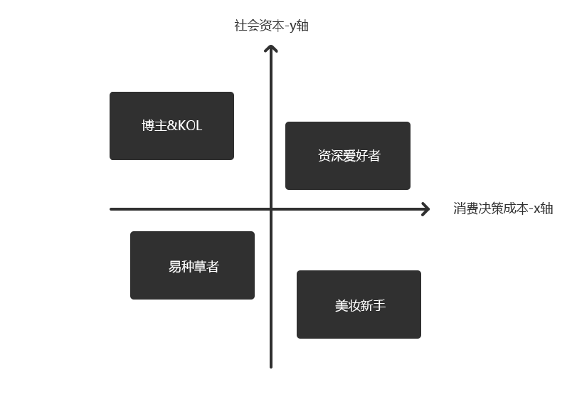
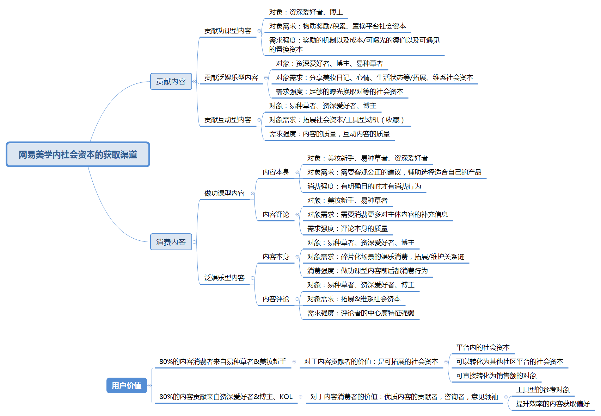
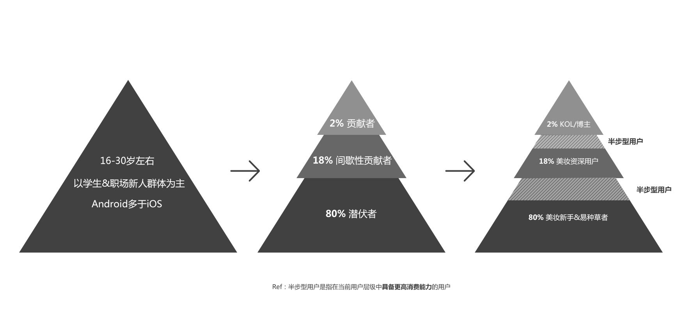
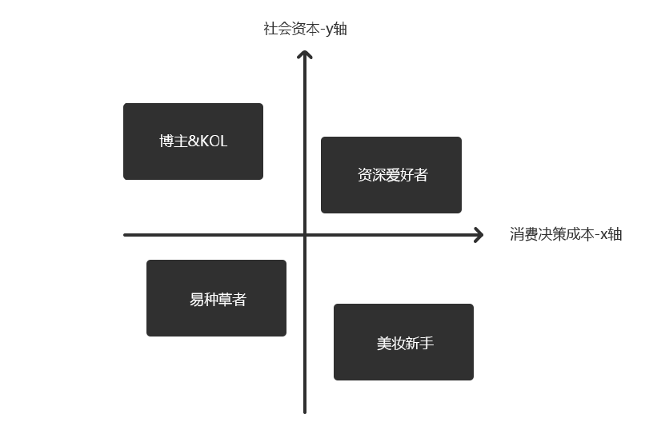
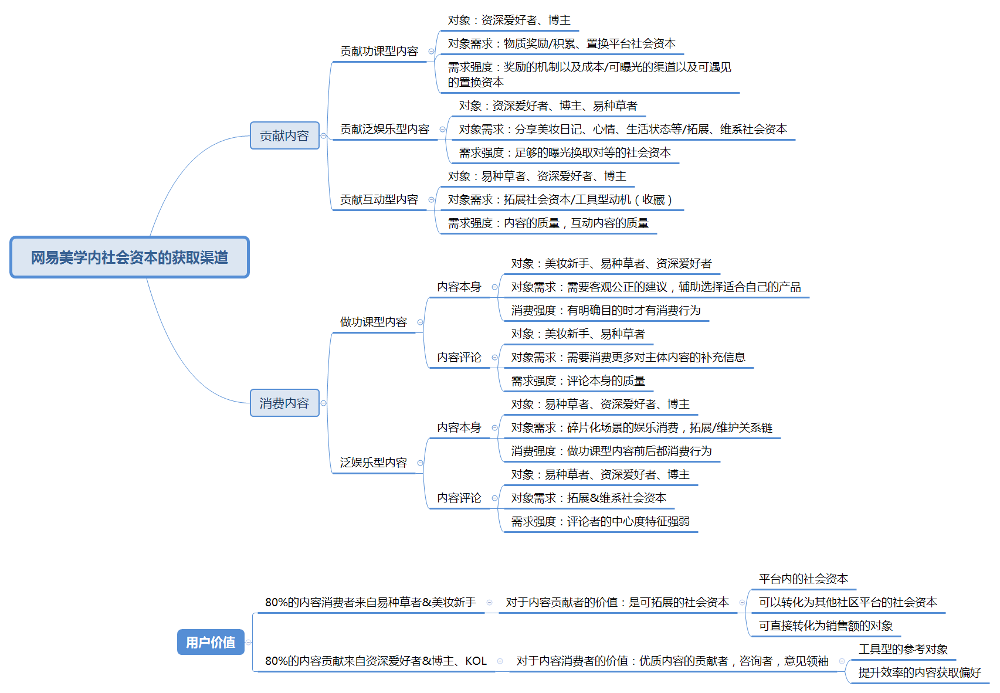
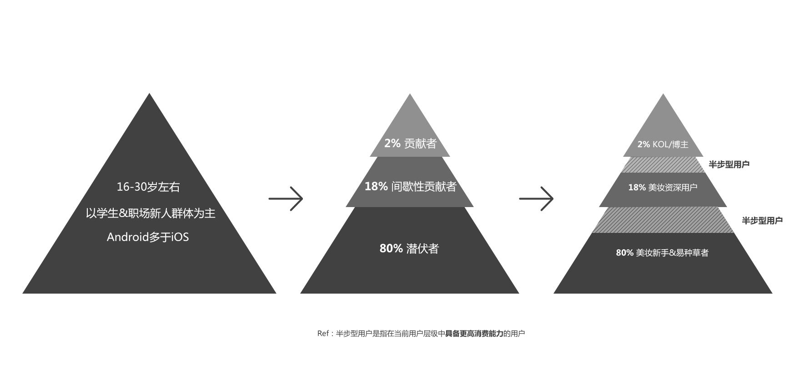

网易美学产品模式思考
mark | 谢晓聪
#概述#
网易美学是一款传递客观公正美妆类信息的社区型产品，而社区型产品的本质是“关系”与“信息”——在社交网络中什么样的信息在怎样的关系中进行传播，就回答了在产品中我们怎么通过有价值（针对目标用户）的信息去聚合社群关系，再通过社群关系（社会资本）的拓展——更好的贡献信息以及传递信息，以此为周期循环。
#用户模型的搭建#
关键指标1：用户的消费决策成本（信息）
关键指标2：用户社会资本（关系）

#社区产品模式—贡献与消费#

#市场定位#
先从主力竞品开始分析小红书；核心群体为一二线（一线更多）都市女性，消费能力以及消费意识都属中上层，定位于生活品味比较高品质，略微有点轻奢。围绕着这样的群体从美妆这个垂直领域切入，目前已经扩展到了母婴，穿着等品类上，可以看得出基本模式是围绕着同一小部分群体提供不同阶段不同维度的消费需求。这个细分市场已经切的比较干净和准确了。（包括最近和《北京女子图鉴》电视剧的市场合作，更加明显的突出核心用户对象）
然后是美妆心得：从他们的榜单产品中可以分析出来目标全体是偏年轻的（护肤榜中前10只有1款产品有抗衰老的功效），消费能力是中等偏下的。美妆日记的功能可以了解到整体服务的群体是学习阶段的年轻二三线的女性用户群体。
最后是网易美学：我们对外的产品定位是客观公正的美妆社区，并且目前用户金字塔中基数最高的是美妆新手&易种草者。在美妆用户全年龄阶段中偏年轻的美妆新手会更看重专业、客观、公正。这也是其他自带电商属性的美妆类社区or工具型产品很难做到的一点。

如果小红书通过电商来做高复购率的品类（母婴、服装穿搭、美妆护肤、生活周边用品——来自商场tab的TOP4品类），来切入女性消费群体中的头部用户（Ref:二八原则）；那么，我们可以通过避开主要竞争市场去以其他思路来切我们的目标用户：
洞察目标用户的消费心理：购买力中等偏低，想体验好的产品但由于实际情况限制了选择范围以及品质；在社区中渴望拓展社会资本，但由于没有体验过更好更贵的产品，苦于无力贡献优质、客观、公正的内容。
目标用户群体的需求是动态的:这取决于我们是打算服务固定的年龄阶段的共同需求（美妆心得），还是服务固定的用户群体不同阶段的需求（小红书）；我个人更倾向做后者，因为小红书的群体年龄基数已经偏高，这类用户的特征是——对新鲜事物的接受能力低，先入为主较明显；我们的用户群体目前还是比较年轻，在培养了这部分群体的粘度（社区服务）后，可以通过做品牌塑造来培养自我品牌的种子用户，等下一批年轻女性涌入市场时，我们的种子用户就成了先天的内容贡献者——博主/KOL，来对新用户做内容的种草（新手用户对内容的获取偏好主要来自身边好友的推荐）
做电商还是做品牌:电商的核心是通过提高客单价or订单量来提升整体营收，这点上首先我们的用户先天性特征就无法满足这个模式，再加上外有小红书，内有考拉，已经是一片红海。那么，升维做品牌也许是另一条思路，打造自己的品牌，在年轻人中做口碑——我们有先天性的信任感背书就是网易本身。
品牌思考:品牌的思路我是这么思考的，费心省力的方式——撮合既有品牌方和用户群体的利益，我们做中间包装服务，以月套餐/季度套餐/年度套餐的形式做捆绑销售（实则是把多次消费并入一次），然后可以分期偿还购买套餐，符合用户群体的购买力特征以及消费决策特征；省心费力的方式——自己做品牌产品，前期通过品牌方的小而美的产品建立起忠诚度以及提升消费品质，后续通过自己生产产品，来提升毛利。
#产品社区规划阶段#
正处于探索期，目前我们需要定位好细分市场，服务的群体具体画像是什么。接下来就是要确认社区的活跃因子，我认为社区的活跃因子是用户在平台内积累的社会资本，当用户的社会资本增加时，对平台的依赖度越高。
内容的填充阶段:通过物质激励去刺激微博/b站等美妆KOL到我们平台进行优质原始内容的积累，并从中洗一部分KOL的粉丝进来（符合画像的目标群体）。
本地KOL的培养:在平台内筛选出具备输出优质内容潜力的爱好者用户，并且通过市场的推广、以及借助外来KOL的粉丝置换，去为我们自己培养的KOL提供原始粉丝的积累；在自制栏目内容以及平台内的群岛上给与足够的流量曝光，通过平台的资源提升她们的社会资本。
本地KOL的社会资本积累&阅读者的效率提升:内容层面上保证质量，同时引导阅览者在评论区进行问答互动；功能层面，提升用户阅读评论效率，互动效率以及内容数量获取的效率。从而提升互动的概率，互动概率与社会资本的增长概率成正相关影响。
#商业模式总结#
通过四个维度来进行分析：网络效应、规模化经济、品牌、技术；综上所述可以建立起竞争壁垒：
网络效应:社区通过跨边网络效应做用户粘性与增长，当KOL/博主在平台上积累了更多的社会资本时，会更乐于贡献优质内容、独家内容，此时越容易吸引更多的种草/拔草者参与进来，跨边网络效应的雪球越滚越大。
规模化经济:上文提到的做品牌思路，通过避开电商的正面竞争，从而考虑以品牌方的角度切入市场，利用同边网络效应做规模化经济——服务固定的用户群体不同阶段的需求，既服务于未来10年内美妆市场的主力消费群体；关键词是：规模和毛利。
品牌:通过企业文化做品牌品质的背书（这是其他创业型公司无法具备的），通过本地培养&外部的KOL等网红进行品牌塑造；品牌的定位就走网红美妆方向。（eg.微博上风靡一时，范冰冰酒糟面膜）
技术:内容的搜索、过滤、反垃圾等策略，这些策略型技术就决定了用户在整个产品内正向或负面体效应影响因子。同时从长远看这也是隐形的技术壁垒。
#结尾关于社区内容偏好的一点思考#
对于内容获取的偏好，我觉得中间度是个切入点，以社会资本的能力作为信息传递的维度，能更好的解决效率的问题。根据不同类型的中间度指标，来对内容流甚至是针对具体的userid来制定内容分发机制。
点度中心度
接近中心度
中间中心度
特征向量中心度
Ref:李奎德的《社交网络用户细分研究》

网易美学是一款传递客观公正美妆类信息的社区型产品，而社区型产品的本质是“关系”与“信息”——在社交网络中什么样的信息在怎样的关系中进行传播，就回答了在产品中我们怎么通过有价值（针对目标用户）的信息去聚合社群关系，再通过社群关系（社会资本）的拓展——更好的贡献信息以及传递信息，以此为周期循环。
#用户模型的搭建#
关键指标1：用户的消费决策成本（信息）
关键指标2：用户社会资本（关系）

#社区产品模式—贡献与消费#

#市场定位#
先从主力竞品开始分析小红书；核心群体为一二线（一线更多）都市女性，消费能力以及消费意识都属中上层，定位于生活品味比较高品质，略微有点轻奢。围绕着这样的群体从美妆这个垂直领域切入，目前已经扩展到了母婴，穿着等品类上，可以看得出基本模式是围绕着同一小部分群体提供不同阶段不同维度的消费需求。这个细分市场已经切的比较干净和准确了。（包括最近和《北京女子图鉴》电视剧的市场合作，更加明显的突出核心用户对象）
然后是美妆心得：从他们的榜单产品中可以分析出来目标全体是偏年轻的（护肤榜中前10只有1款产品有抗衰老的功效），消费能力是中等偏下的。美妆日记的功能可以了解到整体服务的群体是学习阶段的年轻二三线的女性用户群体。
最后是网易美学：我们对外的产品定位是客观公正的美妆社区，并且目前用户金字塔中基数最高的是美妆新手&易种草者。在美妆用户全年龄阶段中偏年轻的美妆新手会更看重专业、客观、公正。这也是其他自带电商属性的美妆类社区or工具型产品很难做到的一点。

如果小红书通过电商来做高复购率的品类（母婴、服装穿搭、美妆护肤、生活周边用品——来自商场tab的TOP4品类），来切入女性消费群体中的头部用户（Ref:二八原则）；那么，我们可以通过避开主要竞争市场去以其他思路来切我们的目标用户：
#产品社区规划阶段#
正处于探索期，目前我们需要定位好细分市场，服务的群体具体画像是什么。接下来就是要确认社区的活跃因子，我认为社区的活跃因子是用户在平台内积累的社会资本，当用户的社会资本增加时，对平台的依赖度越高。
#商业模式总结#
通过四个维度来进行分析：网络效应、规模化经济、品牌、技术；综上所述可以建立起竞争壁垒：
#结尾关于社区内容偏好的一点思考#
对于内容获取的偏好，我觉得中间度是个切入点，以社会资本的能力作为信息传递的维度，能更好的解决效率的问题。根据不同类型的中间度指标，来对内容流甚至是针对具体的userid来制定内容分发机制。
Ref:李奎德的《社交网络用户细分研究》
562820976@qq.com | 联系